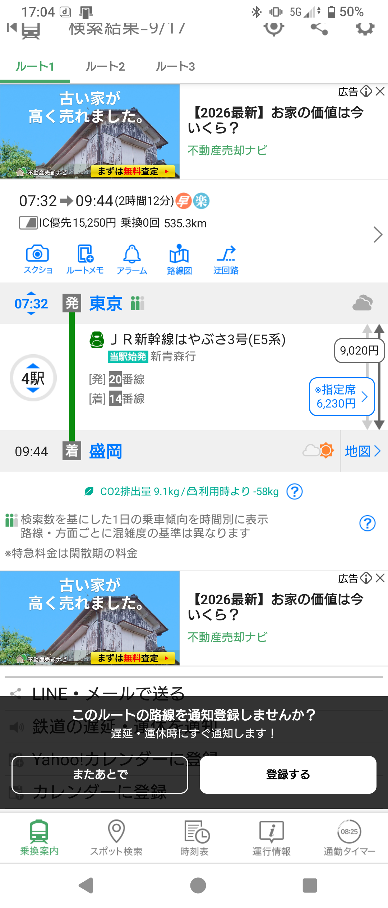
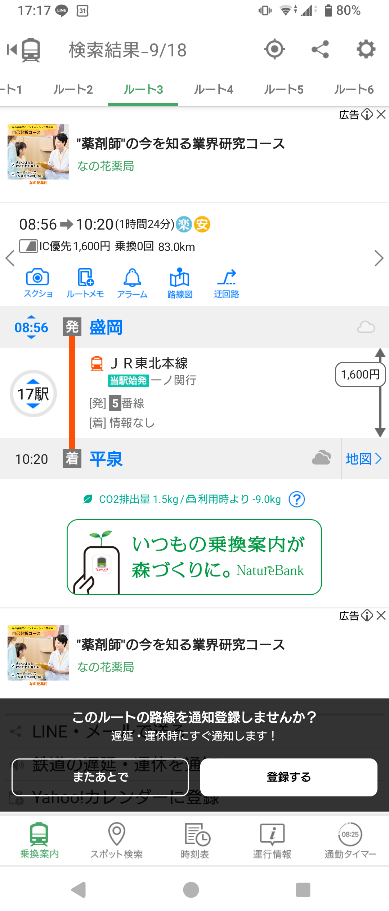
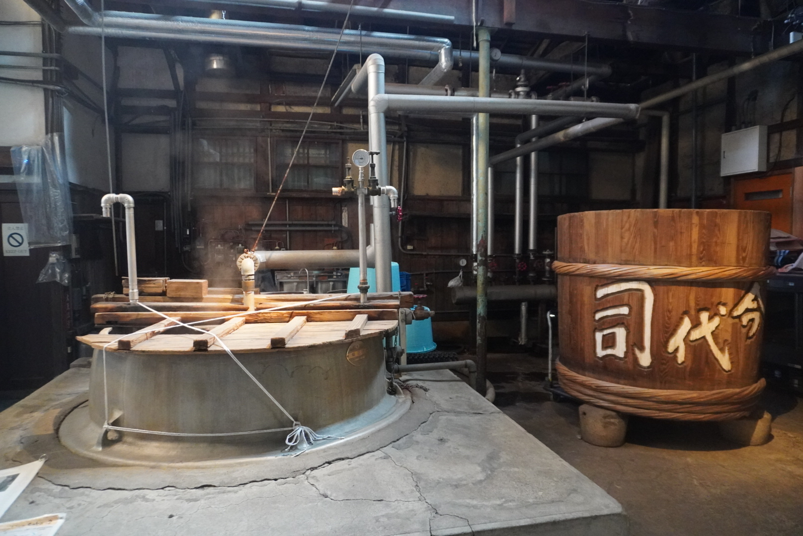
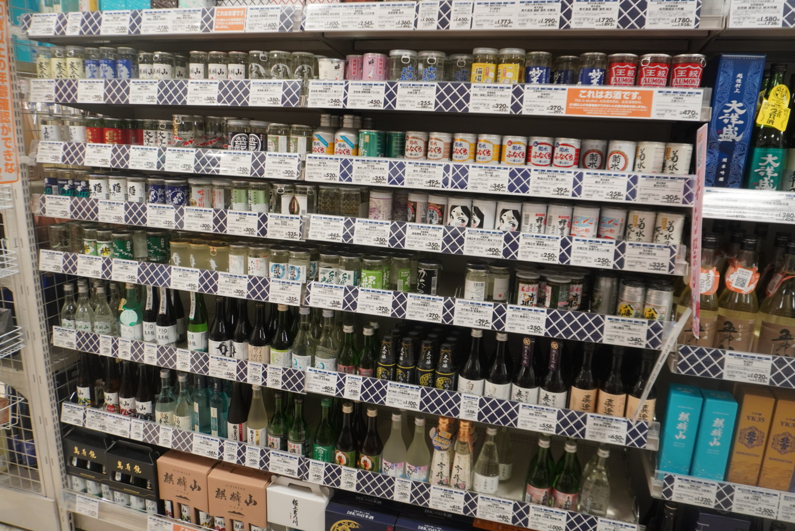
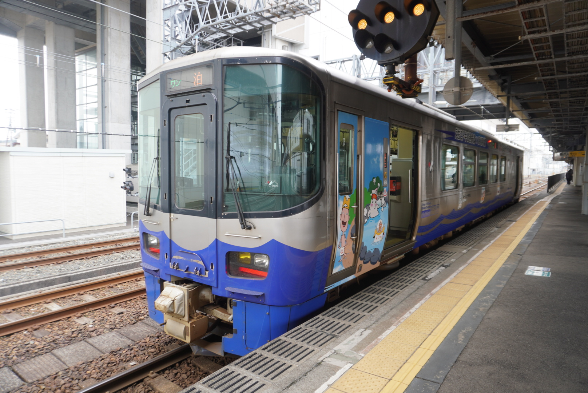
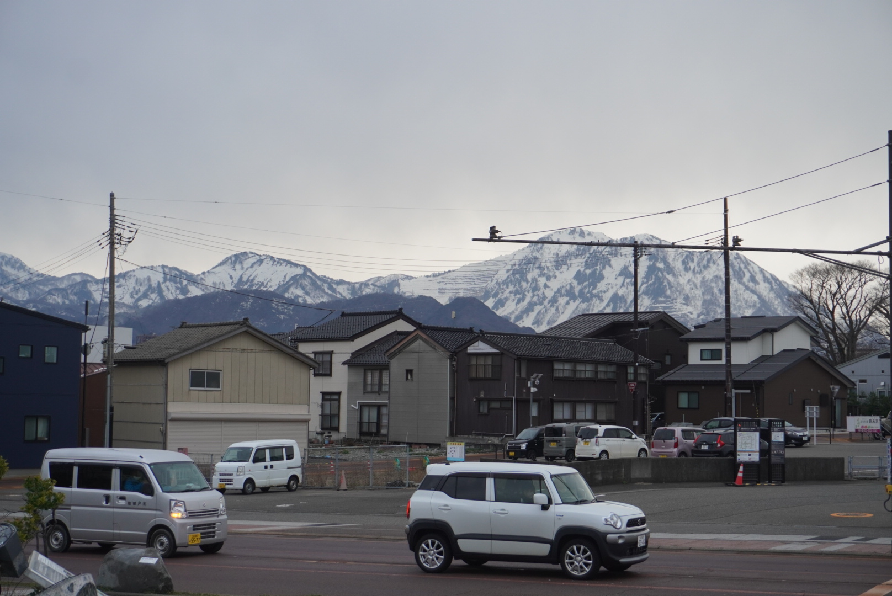
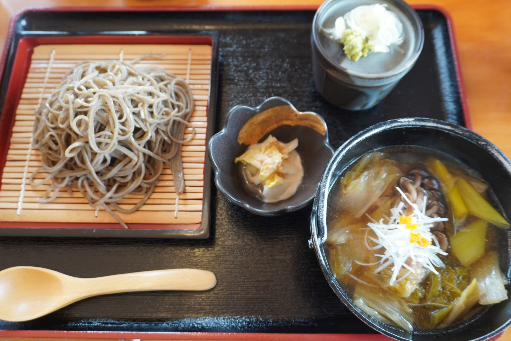
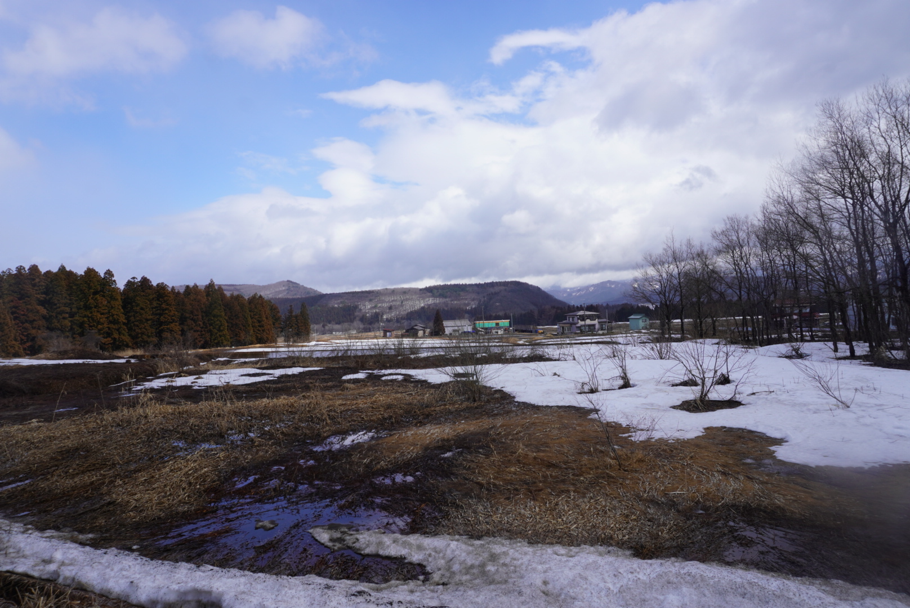
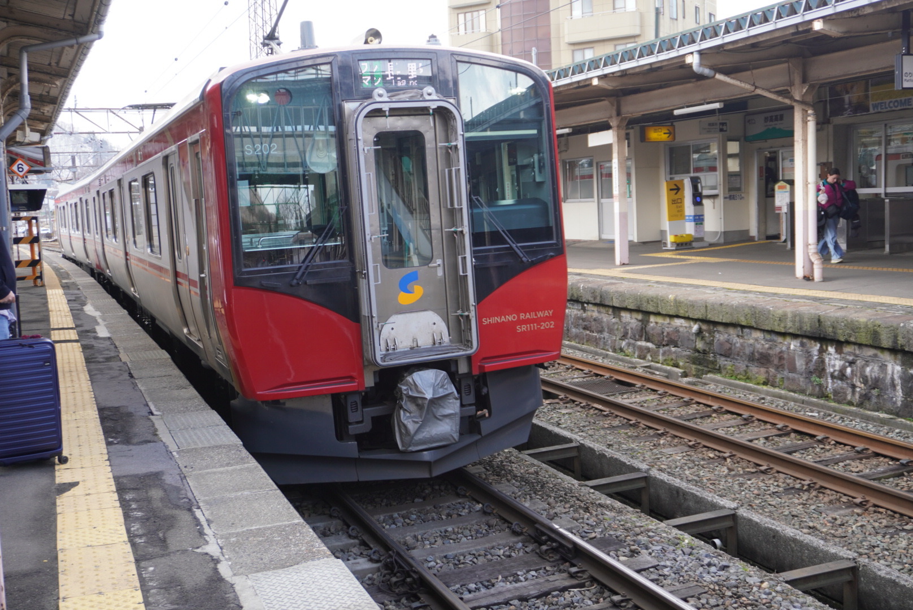
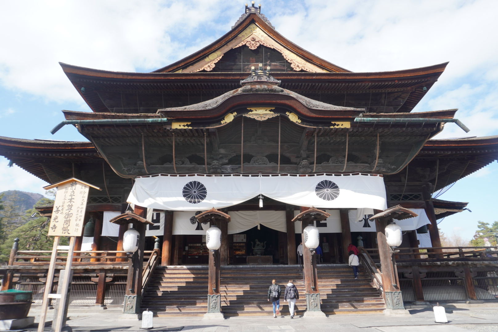

(2026年からの) 旅行・お散歩の記録です。アイコンは飛行機ですが、夜行バス (一睡もできない!) と電車による移動がほとんどです。










今年初の仙台へ、友人2人と夜行バスで向かった。志波彦神社・鹽竈神社を参拝し、フェリー (芭蕉コース) で松島を訪れ、何気に初めて瑞巌寺に参詣した。塩竈は衆院選2026で話題沸騰の宮城4区に含まれることを知った。
- まるたかや 駅前店 (ラーメン, 27時まで営業)
黒部ダムは車のみではアクセスできない (関電トンネルはバスでしか通れない) ので, 断念.